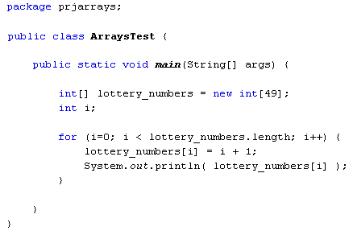

Arrays and Loops
Arrays come into their own with loops. You have seen in the previous section that to assign values to array positions, you did this:
aryNums[0] = 10;
But that's not terribly practical if you have a lot of numbers to assign to an array. As an example, imagine a lottery programme that has to assign the numbers 1 to 49 to positions in an array. Instead of typing a long list of array positions and values you can use a loop. Here's some code that does just that:

So we set up an array to hold 49 integer values. Then comes the loop code. Notice the end condition of the loop:
i < lottery_numbers.length
Length is a property of array objects that you can use to get the size of the array (how many positions it has). So this loop will keep going round and round while the value in the variable i is less than the size of the array.
To assign values to each position in the array, we have this line:
lottery_numbers[i] = i + 1;
Instead of a hard-code value between the square brackets of the array name, we have the variable called i. This increases by 1 each time round the loop, remember. Each array position can then be accessed just by using the loop value. The value that is being assigned to each position is i + 1. So again, it's just the incremented loop value, this time with 1 added to it. Because the loop value is starting at 0, this will give you the numbers 1 to 49.
The other line in the loop just prints out whatever value is in each array
position.
(If you wanted, you could then write code to jumble up the numbers in the array.
Once you have jumbled up the values, you could then take the first 6 and use
them as the lottery numbers. Write another chunk of code that compares a user's
6 numbers with the winning numbers and you have a lottery programme!)
In the next part, you'll see how to sort your arrays.